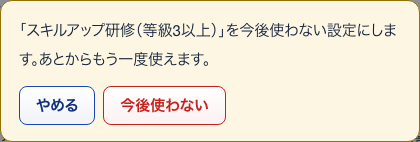
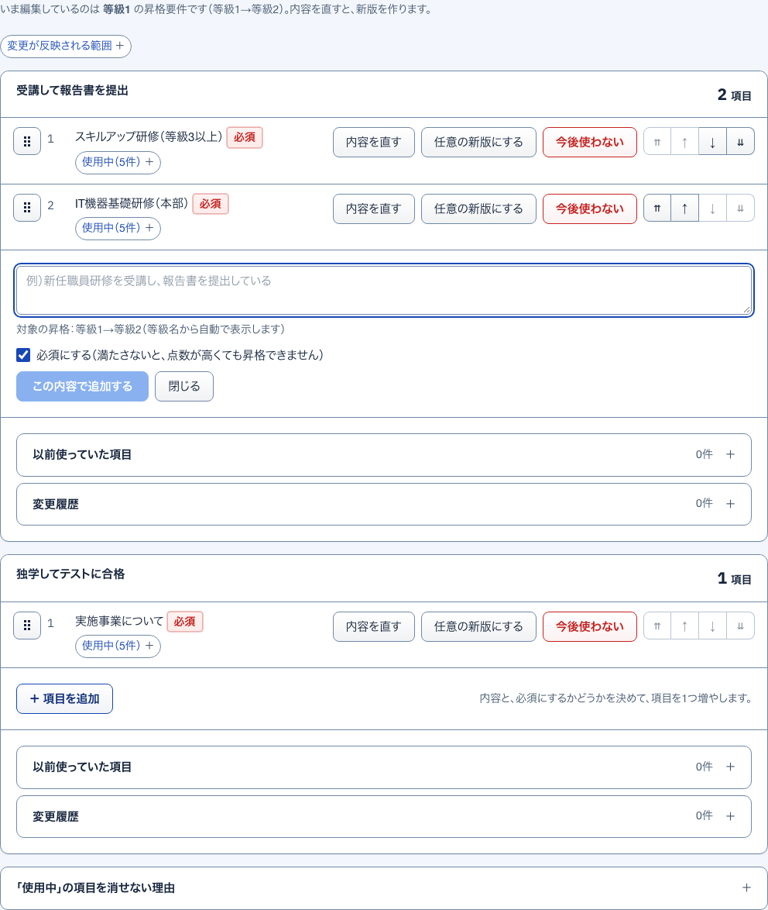
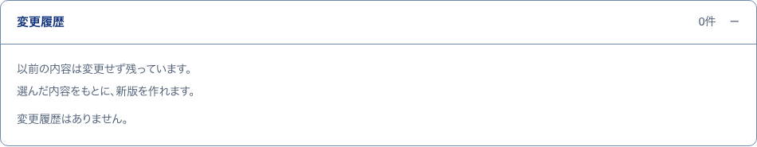
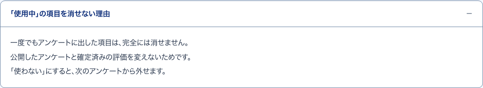

23今後使わない確かめる小窓
S15 昇格の条件・要件 ・ 押すもの: 「今後使わない」 ・ 閉じる: やめる

中に出るもの
- 「（項目の文）」を今後使わない設定にします。あとからもう一度使えます。
中で押せるもの
- 今後使わない: 一覧から外し、以前使っていた項目へ移す
- やめる: 小窓を閉じる
24完全に消す確かめる小窓
S15 昇格の条件・要件 ・ 押すもの: 「完全に消す」 ・ 閉じる: やめる
中に出るもの
- 「（項目の文）」を完全に消します。元に戻せません。
- 一度もアンケートに出していない項目です。
- 公開したアンケートと確定済みの評価は変わりません。
中で押せるもの
- 完全に消す: 項目を消す
- やめる: 小窓を閉じる
25項目を追加開いて見る
S15 昇格の条件・要件 ・ 押すもの: 「＋ 項目を追加」 ・ 閉じる: 閉じる

中に出るもの
- 入力欄（例）新任職員研修を受講し、報告書を提出している）
- 対象の昇格：等級1→等級2（等級名から自動で表示します）
- 必須にする（最初はオン）
中で押せるもの
- この内容で追加する: 項目を1つ足す
- 閉じる: 欄を閉じる
26以前使っていた項目開いて見る
S15 昇格の条件・要件 ・ 押すもの: 「以前使っていた項目」

中に出るもの
- ここには、今後使わない現行項目が出ます。
- 対象の昇格と必須・任意の札、今後使わないの札つきの項目
- 0件なら 今後使わない項目はありません。
中で押せるもの
- もう一度使う: 一覧に戻す（押すと保存する）
- 完全に消す: 確認の小窓を出す
27変更履歴開いて見る
S15 昇格の条件・要件 ・ 押すもの: 「変更履歴」

中に出るもの
- 以前の内容は変更せず残っています。
- 過去版の札つきの項目
- 0件なら 変更履歴はありません。
中で押せるもの
- この内容をもとに新版を作る: 過去版の文で新版を作る（押すと保存する）
28消せない理由開いて見る
S15 昇格の条件・要件 ・ 押すもの: 「「使用中」の項目を消せない理由」

中に出るもの
- 一度でもアンケートに出した項目は、完全には消せません。
- 公開したアンケートと確定済みの評価を変えないためです。
- 「使わない」にすると、次のアンケートから外せます。